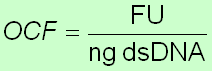
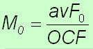
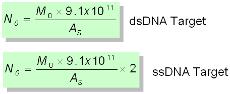

One of the distinctive aspects of LRE quantification is that target quantities are determined in fluorescence units (i.e. the average F0). This provides the opportunity to apply an approach used by a conventional fluorescence assay for quantifying DNA, in which sample fluorescence is converted into DNA mass, based on the fluorescence generated by a known quantity of a DNA standard, such as lambda gDNA. Furthermore, if the sample is composed of a homogenous mixture of DNA molecules, such as is the case for an amplicon within a PCR reaction, the number of DNA molecules within the sample can be determined if the size of the DNA molecule is known.
Absolute quantification can thus be achieved using the process:
target fluorescence (F0) → DNA mass (M0) → # DNA molecules (N0)
The first step is accomplished via optical calibration, in which the fluorescence intensity of an assay is quantified by amplification of a known quantity of lambda gDNA. This generates what is called an optical calibration factor or OCF, which is expressed as fluorescence units per nanogram of dsDNA:

Once an OCF has been determined, the average F0 derived from a sample profile can be converted in to DNA mass (M0):

Importantly, M0 is equivalent to the mass of the amplicon region within the target. The number of target molecules (N0) can thus be determined by converting DNA mass to the number of DNA molecules, based on the amplicon size (AS), the number of base pairs per ng of dsDNA, and the strandedness of the target:

Note however, that this process assumes that fluorescence accurately reflects amplicon DNA mass and is independent amplicon size and GC content. Although extensive testing has shown that SYBR Green I fulfills these requirements, other detection chemistries may not.
Another important qualification is that the lambda gDNA must be amplified using a setup identical to that used to amplify the samples. This introduces the concept of the reaction setup, which incorporates all the factors that the impact the optics of an assay. An optical calibration factor is thus associated with a specific reaction setup.
As described in the quality control section, optical calibration also provides a number of quality control capabilities that includes monitoring of run to run performance. The universal nature of lambda gDNA also makes it amenable to developing performance benchmarks that can provide a foundation for assessing performance differences, for example, between different instruments or enzyme formulations.
Note that a detailed description of optical calibration is provided in the second video of the LRE Overview available on the LRE qPCR web site (sites.google.com/site/lreqpcr).
See also:
Generating an OCF
Applying a Run-specific OCF